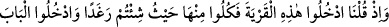
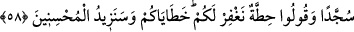
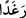

hemen yükselip, kuyunun başına kadar ulaştı. Adam başını semâya çevirip dedi ki:
“Allah’ım bilirim ki, sen güçlüsün. Ben bu nimete güç yetiremem. Keşke bana, beni
tokatlayan, sonra da bir içimlik su veren bir bedevî lutfetseydin. Bu benim için daha
hayırlı olurdu. Bilirim ki bu nimetin içinde bir cihetle tuzağın saklıdır.”
Allah’ın zâhir ve bâtın nimetleri sizi aldatmasın. Şükretmeye ve Allah’ın seni
getirdiği sınırda durmağa azimli ol. Böyle yapmazsan sapıtır, bedbaht olursun.
Ebû Abdullah Kuraşî şöyle demiştir: Kim Allah tarafından kendinde zâhir olan
kerâmet türü şeyleri, halktan sâdır olan günahlar gibi kötü görmezse, bu durum
kendisine perde olur. Bu nimetlerin gizlenmesi onun için daha hayırlıdır. Nimetler,
saâdete vesîle olduğu gibi, istidrâc şeklinde kulun şakâvetine de sebeb olabilir. Nitekim
Mesnevî’de şöyle denir:
Kul, derd ve zahmetlerinden Hakk’a feryâd eder,
Kendi sıkıntılarından yüzlercesini arzeder,
Nihâyet Hakk buyurur ki: Derd ve sıkıntı,
Yalvararak mutlaka seni Hakk’a dost yapar
Sen bu derd ve şikâyetleri, nimet say!
Onlar seni bizden uzak, bizi kapından kovulmuş eylemesin!
Hak yolun sâliki; zât, sıfat ve fiillerinden fânî olmalı; sıddîklardan ve yakîne
erenlerden olmak için ilâhî emirlere uymalıdır. Yâ Rabb, bizi tuzaklarından gâfil
eyleme, bize zikrini unutturma, her hâl ve işinde seninle beraber olanlara ilhâk eyle,
âmîn. Muhammedü’l-Emîn’in makamı için duâlarımızı kabûl eyle!
58. (İsrâîloğulları’na:) Bu kasabaya girin, orada bulunanlardan dilediğiniz
şekilde bol bol yeyin, kapısından eğilerek girin, (girerken) “Hıtta!” (Yâ Rabbi bizi
affet) deyin ki, sizin hatâlarınızı bağışlayalım; zirâ biz, iyi davrananlara
[karşılığını) fazlasıyla vereceğiz, demiştik.
Bu Allah’ın onlara sekizinci nimetidir. Çünkü Allah onların Tîh’i geçip bir beldeye
girmelerine izin vermiştir. Allah, “Ey İsrâîloğulları! Atalarınızı Tîh’den kurtarıp da
şöyle dediğimizi hatırlayın!” buyurmaktadır.
Şehir veya köy diye terceme edilen “Karye” veya “kırye”, insanların toplandığı yer
mânâsına gelip “kurâ” kelimesinden alınmıştır. Âyetteki karyeden maksad, Beyt-i
Makdis; yâni Kudüs’tür. Âyetteki (
) kelimesine masdar olarak: “Girdiğiniz bu
karyede bol bol âfiyetle yiyiniz” veya “bolluk içinde olduğunuz halde yiyin” mânâsı
da verilebilir. Âyette köye girmekten maksadın oraya yerleşmek olduğu anlaşılmaktadır.